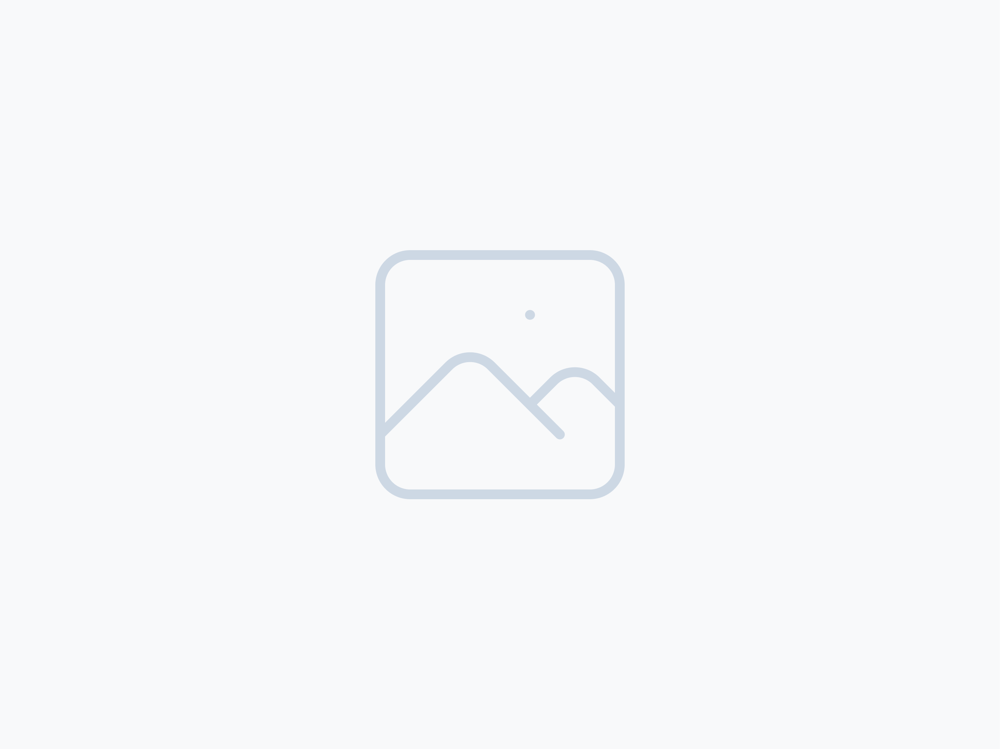

"Sempre seré scout": ganadores del Festival de la Cançó Scout
Ganamos el Festival de la Cançó Scout de la Comunitat Valenciana con una canción propia, compuesta y defendida junto a nuestro grupo hermanado, el Grup Scout Alcora.
Crónicas, fotos y aventuras de lo que hacemos cada semana.

Cada Ronda Solar vivimos tres acampadas. Pero si hay una que esperamos con ganas es la de verano: días de naturaleza, convivencia y aventura que se recuerdan todo el año.
Verano 2024Los momentos que han marcado al grupo. Estas son las historias que nos gusta contar.
Ganamos el Festival de la Cançó Scout de la Comunitat Valenciana con una canción propia, compuesta y defendida junto a nuestro grupo hermanado, el Grup Scout Alcora.

Representamos a la Comunitat Valenciana en el Festival Nacional de la Cançó Scout y quedamos en segundo puesto. Un escenario que nos dio visibilidad y muchas ganas de seguir.

Días de naturaleza, convivencia y aventura. Es el campamento que todos esperan con más ganas y el que deja los mejores recuerdos.

Uno de los tres campamentos anuales. Días de convivencia, fuego y trabajo en equipo que nos preparan para el resto del curso.

Cada Navidad montamos una feria donde vendemos cosas hechas por nosotros. Es una de las actividades más esperadas del año y una forma de compartir el espíritu del grupo con todo el barrio.

Compartimos aventuras, festivales y escenario con el Grup Scout Alcora. Una alianza que nos ha llevado juntos a ganar el autonómico y a pisar un nacional.
Publicamos fotos y novedades cada semana. La mejor forma de ver el día a día del grupo.
Cada sábado es una nueva aventura. Inscríbelo y deja que lo descubra.
Inscribir a mi hijo/a